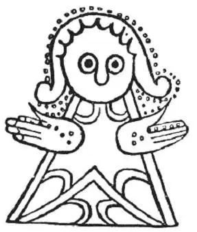
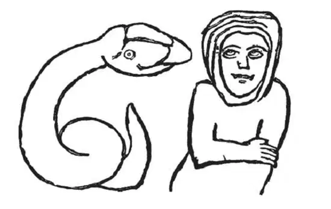

I. The deteriorative power Of conventional art over Nations
一、传统艺术对国家的消极影响
Delivered at the Kensington Museum (A few introductory words, in which, at the opening of this lecture, I thanked the Chairman (Mr. Cockerell), for his support on the occasion, and asked his pardon for any hasty expressions in my writings, which might have seemed discourteous towards him, architects whose general opinions were opposed to mine, or other may be found by those who care for preambles, not much misreported, in the Building Chronicle; with such comments as the genius of that journal was likely to suggest to it.), January, 1858.
1858 年 1 月于肯辛顿博物馆（在这篇演讲的导入语中，我对主席（科克雷尔先生）对本次活动的支持表示了感谢。可能留心看导言的人在《建筑编年史》中发现，我的作品中某些草率的言辞——该刊基本正确地转述了这些话，而且还附有可能由该刊添加的评语——可能会冒犯到他或其他与我意见不同的建筑师，我在这里也请求了他的谅解。——作者注）
As I passed, last summer, for the first time, through the north of Scotland, it seemed to me that there was a peculiar painfulness in its scenery, caused by the non-manifestation of the powers of human art. I had never travelled in, nor even heard or conceived of such a country before; nor, though I had passed much of my life amidst mountain scenery in the south, was I before aware how much of its charm depended on the little gracefulnesses and tendernesses of human work, which are mingled with the beauty of the Alps, or spared by their desolation. It is true that the art which carves and colours the front of a Swiss cottage is not of any very exalted kind; yet it testifies to the completeness and the delicacy of the faculties of the mountaineer; it is true that the remnants of tower and battlement, which afford footing to the wild vine on the Alpine promontory, form but a small part of the great serration of its rocks; and yet it is just that fragment of their broken outline which gives them their pathetic power, and historical majesty. And this element among the wilds of our own country I found wholly wanting. The Highland cottage is literally a heap of grey stones, choked up, rather than roofed over, with black peat and withered heather; the only approach to an effort at decoration consists in the placing of the clods of protective peat obliquely on its roof, so as to give a diagonal arrangement of lines, looking somewhat as if the surface had been scored over by a gigantic claymore.
去年夏天，第一次经过苏格兰北部地区时，我发现那里感受不到人类艺术的力量，以至于让我觉得那里的景色有种别样的痛苦。我以前从来没有到过，甚至没听过，也没想过会有这样的地方；尽管我大部分时间生活在南方的山区，但以前也没意识到人类杰作的些许优雅和温柔对景色魅力有如此大的影响；这些人类杰作或与阿尔卑斯山脉的壮美融为一体，或因其荒凉而显得形单影只。瑞士小屋门前的雕刻和图画的确算不上是很高雅的艺术，但却显示了山区人想象力丰富、心灵手巧。阿尔卑斯山脊上藤蔓丛生的断壁残垣，也的确只是崎岖山岩的一小部分，但正是这些破碎的身影赋予它们沧桑的力量和历史的威严。而我发现我们国家的荒野完全缺少这种气息。苏格兰高原上的小屋简直就是一堆灰色的石头，黑泥炭块和枯萎的茅草像是从顶部硬塞进去的，根本不像屋顶；唯一接近装饰作用的是：屋顶上起保护作用的泥炭块是斜放的，如此便出现了斜纹线条，使屋顶表面看上去有点像被双刃大砍刀划过似的。
And, at least among the northern hills of Scotland, elements of more ancient architectural interest are equally absent. The solitary peel-house
1 is hardly discernible by the windings of the stream; the roofless aisle of the priory is lost among the enclosures of the village; and the capital city of the Highlands, Inverness, placed where it might ennoble one of the sweetest landscapes, and by the shore of one of the loveliest estuaries in the world;—placed between the crests of the Grampians and the flowing of the Moray Firth, as if it were a jewel clasping the folds of the mountains to the blue zone of the sea,—is only distinguishable from a distance by one architectural feature, and exalts all the surrounding landscape by no other associations than those which can be connected with its modern castellated gaol.
而且，至少是在苏格兰北部山区，人们对更古老些的建筑元素也同样缺少兴趣。在蜿蜒小溪环抱中的孤零零的堡塔几乎无法辨别；小修道院露天的侧廊湮没在小村子的围墙内；再看看高地之都因弗内斯，位于可以使它成为最美丽的风景的地区，在世界上最可爱的港湾的海岸边，坐落在默里湾与格兰扁山脉的群峰之间，就像一块宝石紧紧连着群山和蓝色的海洋。从远处看，它只呈现出清一色的建筑风格，除了那些能与它的城堡式的现代监狱联系起来的之外，再没有其他什么可以给周围的风景增添姿色了。
While these conditions of Scottish scenery affected me very painfully, it being the first time in my life that I had been in any country possessing no valuable monuments or examples of art, they also forced me into the consideration of one or two difficult questions respecting the effect of art on the human mind; and they forced these questions upon me eminently for this reason, that while I was wandering disconsolately among the moors of the Grampians, where there was no art to be found, news of peculiar interest was every day arriving from a country where there was a great deal of art, and art of a delicate kind, to be found. Among the models set before you in this institution, and in the others established throughout the kingdom for the teaching of design, there are, I suppose, none in their kind more admirable than the decorated works of India. They are, indeed, in all materials capable of colour, wool, marble, or metal, almost inimitable in their delicate application of divided hue, and fine arrangement of fantastic line. Nor is this power of theirs exerted by the people rarely, or without enjoyment; the love of subtle design seems universal in the race, and is developed in every implement that they shape, and every building that they raise; it attaches itself with the same intensity, and with the same success, to the service of superstition, of pleasure or of cruelty; and enriches alike, with one profusion on enchanted iridescence, the dome of the pagoda, the fringe of the girdle, and the edge of the sword.
苏格兰的这些风景让我感觉很痛苦，这是我平生第一次置身于一个没有任何有价值的纪念物和艺术范品的国家。同时这些也迫使我开始思考一两个有关艺术对人类思想影响的难题；尤其当我在毫无艺术可寻的格兰扁沼泽郁闷地徘徊，每天都听说某个拥有大量精美艺术品的国家又有新的独特发现时，这些问题更加深深地困扰着我。我想，无论是这机构还是英国其他与设计学相关的机构，在其展示的艺术模型中，印度的装饰艺术品是最令人称奇的。的确，在所有能够着色的材料上，例如羊毛、大理石或者金属上，他们对不同色彩的精致运用和线条的奇妙安排几乎是无人能及的。这种能力在印度人民身上并不少见，而且给他们带来了乐趣。似乎这整个民族都热爱精巧的设计，他们制造的每一件工具、建造的每一座建筑都发展着这种精巧的设计。这种设计以同样的力度、同样的成功服务于迷信、享乐及残酷的行为。他们用丰富迷人的色彩装点宝塔穹顶、腰带穗子和宝剑的利刃。
So then you have, in these two great populations, Indian and Highland—in the races of the jungle and of the moor—two national capacities distinctly and accurately opposed. On the one side you have a race rejoicing in art, and eminently and universally endowed with the gift of it; on the other you have a people careless of art, and apparently incapable of it, their utmost effort hitherto reaching no farther than to the variation of the positions of the bars of colour in square chequers. And we are thus urged naturally to inquire what is the effect on the moral character, in each nation, of this vast difference in their pursuits and apparent capacities? and whether those rude chequers of the tartan, or the exquisitely fancied involutions of the Cashmere, fold habitually over the noblest hearts? We have had our answer. Since the race of man began its course of sin on this earth, nothing has ever been done by it so significative of all bestial, and lower than bestial degradation, as the acts of the Indian race in the year that has just passed by. Cruelty as fierce may indeed have been wreaked, and brutality as abominable been practised before, but never under like circumstances; rage of prolonged war, and resentment of prolonged oppression, have made men as cruel before now; and gradual decline into barbarism, where no examples of decency or civilisation existed around them, has sunk, before now, isolated populations to the lowest level of possible humanity. But cruelty stretched to its fiercest against the gentle and unoffending, and corruption festered to its loathsomest in the midst of the witnessing presence of a disciplined civilisation, —these we could not have known to be within the practicable compass of human guilt, but for the acts of the Indian mutineer. And, as thus, on the one hand, you have an extreme energy of baseness displayed by these lovers of art; on the other,—as if to put the question into the narrowest compass—you have had an extreme energy of virtue displayed by the despisers of art. Among all the soldiers to whom you owe your victories in the Crimea
2, and your avenging in the Indies, to none are you bound by closer bonds of gratitude than to the men who have been born and bred among those desolate Highland moors. And thus you have the differences in capacity and circumstance between the two nations, and the differences in result on the moral habits of two nations, put into the most significant—the most palpable—the most brief opposition. Out of the peat cottage come faith, courage, self-sacrifice, purity, and piety, and whatever else is fruitful in the work of Heaven; out of the ivory palace come treachery, cruelty, cowardice, idolatry, bestiality, —whatever else is fruitful in the work of Hell.
于是你们看到，印度和苏格兰这两大民族——丛林中的民族和沼泽中的民族——拥有截然不同、甚至是完全对立的艺术才能。一个热爱艺术，人民普遍具有非凡的艺术天赋；另一个忽视艺术，而且显然在这方面没有能力，能做到的最多就是方块格子里彩条的位置有些变化罢了。我们自然要追问，这两个民族在艺术追求和外在能力方面的巨大差别，究竟对他们的道德品质有什么影响呢？是不是那些粗糙的花格子，或者巧妙编织的羊毛，习惯性地缠住了这些最高贵的心？我们已经有了自己的答案。自从人类背负原罪降临到这个世界上，就没有过比印度民族在刚刚过去的一年里的行为更加像野兽、甚至比兽行更卑鄙的事情了。类似残忍可怕的事以前可能的确发生过，同样野蛮的暴行以前也可能有过，但从来没有在类似的环境里发生。长期战争带来的愤怒，长期压迫产生的怨恨，使得人们像以前一样残酷，一步步退化至野蛮，周围再也找不到体现高雅或是文明的事物。与世隔绝的人们已经沉沦到人性可能的最低水平。残忍最猛烈地侵蚀着友善平和，一个纪律严明的文明社会亲眼目睹着腐败走向极端——要不是这些印度反抗者的暴行，我们可能也不会知道人类的罪恶可以达到这种程度。这样一来，一方面你们会觉得这些爱好艺术的人行为极端卑贱，而另一方面，如果从最狭隘的角度看，你们会觉得这些漠视艺术的人却表现出高尚的美德。无论是克里米亚战争的胜利，还是向印度复仇的成功，英国人最应该感谢的战士就是这些生长在荒凉高地沼泽中的人们。据此，你们会发现两个国家在能力和生存环境方面的差别与由此导致的道德习惯上的不同形成了最鲜明、最突出和最直接的反差。泥炭小屋造就了信念、勇气、自我牺牲、纯洁、虔诚以及其他神圣的品行，而象牙宫殿却导致了背叛、残忍、怯懦、盲目崇拜、兽欲等邪恶的行径。
But the difficulty does not close here. From one instance, of however great apparent force, it would be wholly unfair to gather any general conclusion—wholly illogical to assert that because we had once found love of art connected with moral baseness, the love of art must be the general root of moral baseness; and equally unfair to assert that, because we had once found neglect of art coincident with nobleness of disposition, neglect of art must be always the source or sign of that nobleness. But if we pass from the Indian peninsula into other countries of the globe; and from our own recent experience, to the records of history, we shall still find one great fact fronting us, in stern universality—namely, the apparent connection of great success in art with subsequent national degradation. You find, in the first place, that the nations which possessed a refined art were always subdued by those who possessed none: you find the Lydian subdued by the Mede; the Athenian by the Spartan; the Greek by the Roman; the Roman by the Goth; the Burgundian by the Switzer: but you find, beyond this—that even where no attack by any external power has accelerated the catastrophe of the state, the period in which any given people reach their highest power in art is precisely that in which they appear to sign the warrant of their own ruin; and that, from the moment in which a perfect statue appears in Florence, a perfect picture in Venice, or a perfect fresco in Rome, from that hour forward, probity, industry, and courage seem to be exiled from their walls, and they perish in a sculpturesque paralysis, or a many-coloured corruption.
但难题尚未得到解决。即使表面看来再明显，通过一个例子就得出一般性的结论也是完全不公平的——仅因为我们曾经发现有一例可以说明对艺术的热爱与道德品质低下有关，就得出结论说前者一定是后者的普遍根源，这是完全不合理的；同样地，因为曾经发现漠视艺术与高尚的品德相一致，就认定前者一定永远是后者的根源或是表现，这也是不公平的。但是，如果我们越过印度半岛，纵览地球上的其他国家，或者从我们国家自己近年的经历和历史记录中观察，我们还是能发现所面对的一个重大的、具有严格普遍性的事实，那就是，艺术方面的伟大成就明显与随后出现的国家堕落有关联。首先你们会发现，那些拥有精湛艺术的国家往往屈服于没有任何艺术可言的国家：吕底亚人屈服于米堤亚人，雅典人屈服于斯巴达人，希腊人屈服于罗马人，罗马人屈服于哥特人，勃艮第人又屈服于瑞士人。但你会进一步发现，即使没有外部力量的攻击来加速这个国家的灭亡，一个国家艺术上取得最高成就的时期也往往恰恰是他们为自我毁灭签订担保书的时候。你会发现，当佛罗伦萨出现了完美雕像，威尼斯出现了完美画作，或是罗马有了完美壁画的时候，从那一刻起，正直、勤奋和勇气就好像被驱逐出了它们的领地，它们也在雕像般的麻木或五光十色的堕落中走向死亡。
But even this is not all. As art seems thus, in its delicate form, to be one of the chief promoters of indolence and sensuality,—so, I need hardly remind you, it hitherto has appeared only in energetic manifestation when it was in the service of superstition. The four greatest manifestations of human intellect which founded the four principal kingdoms of art, Egyptian, Babylonian, Greek, and Italian, were developed by the strong excitement of active superstition in the worship of Osiris
3, Belus
4, Minerva
5, and the Queen of Heaven. Therefore, to speak briefly, it may appear very difficult to show that art has ever yet existed in a consistent and thoroughly energetic school, unless it was engaged in the propagation of falsehood, or the encouragement of vice.
但是，即使这些也不是全部。艺术，因其精致的形式，似乎是懒惰和肉欲的主要催化剂之一，所以也不需要我提醒你们：迄今为止，只有当艺术服务于迷信活动时，才表现得充满活力。人类智慧的四个最伟大的体现——埃及、巴比伦、希腊和意大利这四个主要的艺术王国的建立，正是源于对欧西里斯、贝勒斯、密涅瓦和天后的激情崇拜而开展的积极的迷信活动。因此，简单来说，除了被用于传播虚假的东西，或者鼓励恶行，看来很难将艺术归入始终充满活力的学派中去。
And finally, while art has thus shown itself always active in the service of luxury and idolatry, it has also been strongly directed to the exaltation of cruelty. A nation which lives a pastoral and innocent life never decorates the shepherd's staff or the plough-handle, but races who live by depredation and slaughter nearly always bestow exquisite ornaments on the quiver, the helmet, and the spear.
最后一点，在艺术总是积极服务于奢侈和盲目崇拜的同时，它也被强烈地导向了对残忍的助长。一个过着单纯的田园生活的国家，从来不会装饰牧羊棒或者犁把手；而生活在掠夺和屠杀中的民族几乎总是精美地装饰箭袋、头盔和长矛。
Does it not seem to you, then, on all these three counts, more than questionable whether we are assembled here in Kensington Museum to any good purpose? Might we not justly be looked upon with suspicion and fear, rather than with sympathy, by the innocent and unartistical public? Are we even sure of ourselves? Do we know what we are about? Are we met here as honest people? or are we not rather so many Catilines
6 assembled to devise the hasty degradation of our country, or, like a conclave of midnight witches, to summon and send forth, on new and unsuspected missions, the demons of luxury, cruelty, and superstition?
那么，考虑到上述三个方面，你们是不是开始怀疑我们聚集在肯辛顿博物馆，到底有没有善意的目的了呢？那些单纯的、与艺术无关的大众是不是根本不赞同我们，用怀疑和恐惧的眼光不公正地看待我们呢？我们自己就相信自己吗？我们知道自己要做的事情吗？我们聚集在这儿，是出于诚实和正直吗？或者，难道我们就是一群喀提林，聚集在这儿，谋划着如何加速我们国家的堕落，或是一群巫师在午夜秘密集合，为达成新的难以预料的任务，召唤并派出奢侈、残酷和迷信的恶魔？
I trust, upon the whole, that it is not so: I am sure that Mr. Redgrave and Mr. Cole do not at all include results of this kind in their conception of the ultimate objects of the institution which owes so much to their strenuous and well-directed exertions. And I have put this painful question before you, only that we may face it thoroughly, and, as I hope, out-face it. If you will give it a little sincere attention this evening, I trust we may find sufficiently good reasons for our work, and proceed to it hereafter, as all good workmen should do, with clear heads, and calm consciences.
无论如何，我相信不是这样的。我确信瑞德格雷夫先生和科尔先生辛辛苦苦、耗尽心力建设这座博物馆的最终目的肯定不包括这些。而我将这个棘手的问题抛给你们，只是希望我们能全面认识并勇敢地面对这个问题。今晚，如果你们能稍微认真地思考这个问题，我相信我们会为自己的工作找到足够充足的理由，并据此一直坚持下去，就像所有好工人应该做的那样，保持头脑清醒、心境平和。
To return, then, to the first point of difficulty, the relations between art and mental disposition in India and Scotland. It is quite true that the art of India is delicate and refined. But it has one curious character distinguishing it from all other art of equal merit in design—it never represents a natural fact. It either forms its compositions out of meaningless fragments of colour and flowings of line; or, if it represents any living creature, it represents that creature under some distorted and monstrous form. To all the facts and forms of nature it wilfully and resolutely opposes itself; it will not draw a man, but an eight-armed monster; it will not draw a flower, but only a spiral or a zigzag.
现在回到第一个难点，也就是印度和苏格兰两个民族中，艺术和道德品质之间的关系。印度的艺术作品的确优雅精美，但与其他同样设计精美的艺术品相比，它有个奇怪的特点——从来不表现自然事物。要么是些没有意义的零碎色块和流动的线条组成的图案；要么，即便是表现活物，也是以扭曲和怪异的形式出现。自然中的所有事实及形式都被肆意而又坚决地对立表现：它不画人，只画八只胳膊的怪物；它不画花朵，只画螺旋或曲折的线条。
It thus indicates that the people who practise it are cut off from all possible sources of healthy knowledge or natural delight; that they have wilfully sealed up and put aside the entire volume of the world, and have got nothing to read, nothing to dwell upon, but that imagination of the thoughts of their hearts, of which we are told that "it is only evil continually." Over the whole spectacle of creation they have thrown a veil in which there is no rent. For them no star peeps through the blanket of the dark—for them neither their heaven shines nor their mountains rise—for them the flowers do not blossom—for them the creatures of field and forest do not live. They lie bound in the dungeon of their own corruption, encompassed only by doleful phantoms, or by spectral vacancy.
这表明，运用这种艺术能力的人已经远离所有可能的有益知识或自然欢乐之源；他们已经任性地将整个世界这本大书密封起来，放到一边。已经没有什么东西可以让他们阅读，可以让他们思考，就只剩下他们凭空的想象力——也就是我们所认为的“只是邪恶的延续”。他们给造物主创造出来的整个奇观世界蒙上了一层密不透风的面纱。对他们而言，星光透不过黑色的夜幕；对他们而言，天空没有光明，山脉不会升起；对他们而言，花朵不会盛开；对他们而言，田野和森林里的动物没有生命。他们被自己的堕落囚禁，犹如躺在地牢中，周围只有悲哀的幻影，或毛骨悚然的空虚。
Need I remind you what an exact reverse of this condition of mind, as respects the observance of nature, is presented by the people whom we have just been led to contemplate in contrast with the Indian race? You will find upon reflection, that all the highest points of the Scottish character are connected with impressions derived straight from the natural scenery of their country. No nation has ever before shown, in the general tone of its language,—in the general current of its literature,—so constant a habit of hallowing its passions and confirming its principles by direct association with the charm, or power, of nature. The writings of Scott and Burns—and yet more, of the far greater poets than Burns who gave Scotland her traditional ballads,—furnish you in every stanza—almost in every line,—with examples of this association of natural scenery with the passions; (The great poets of Scotland, like the great poets of all other countries, never write dissolutely, either in matter or method; but with stern and measured meaning in every syllable. Here's a bit of first-rate work for example:—
我们刚刚已经提过有一个和印度民族截然相反的民族。还需要我再提醒你们，在对自然的观察方面，他们所呈现出的思想状态是如何地截然不同吗？想一想你就会发现，苏格兰人性格中的所有优点都和他们对本国自然景观的直观印象紧紧相连。在这之前从来没有一个民族像苏格兰一样，在语言的一般风格和文学的总体潮流中，通过与自然的魅力或力量直接相连，不断升华自己的激情和证实自己的原则。司各特和彭斯的作品，以及更多远比彭斯伟大的诗人写的苏格兰传统民谣，每一节——几乎是每一行，都表现了自然景色和激情之间的联系（苏格兰的伟大诗人，像其他国家的伟大诗人一样，在写作内容和方法上从不肆意妄为。作品中每一个音节的意思都经过了严格的斟酌。现以一部一流作品中的一段为例：
"Tweed said to Till,
特威德河对蒂尔河说，
'What gars ye rin sae still?'
“你为什么流得那么平静？”
Till said to Tweed,
蒂尔河对特威德河说，
'Though ye rin wi' speed,
“虽然你流得快，
Whar ye droon ae man,
但你只能淹死一个人，
I droon twa.'") but an instance of its farther connection with moral principle struck me forcibly just at the time when I was most lamenting the absence of art among the people. In one of the loneliest districts of Scotland, where the peat cottages are darkest, just at the western foot of that great mass of the Grampians which encircles the sources of the Spey and the Dee, the main road which traverses the chain winds round the foot of a broken rock called Crag, or Craig Ellachie. There is nothing remarkable in either its height or form; it is darkened with a few scattered pines, and touched along its summit with a flush of heather; but it constitutes a kind of headland, or leading promontory, in the group of hills to which it belongs—a sort of initial letter of the mountains; and thus stands in the mind of the inhabitants of the district, the Clan Grant, for a type of their country, and of the influence of that country upon themselves. Their sense of this is beautifully indicated in the war-cry of the clan, "Stand fast, Craig Ellachie." You may think long over those few words without exhausting the deep wells of feeling and thought contained in them—the love of the native land, the assurance of their faithfulness to it; the subdued and gentle assertion of indomitable courage—I may need to be told to stand, but, if I do, Craig Ellachie does. You could not but have felt, had you passed beneath it at the time when so many of England's dearest children were being defended by the strength of heart of men born at its foot, how often among the delicate Indian palaces, whose marble was pallid with horror, and whose vermilion was darkened with blood, the remembrance of its rough grey rocks and purple heaths must have risen before the sight of the Highland soldier; how often the hailing of the shot and the shriek of battle would pass away from his hearing, and leave only the whisper of the old pine branches, —"Stand fast, Craig Ellachie!"
我却能淹死俩。”——作者注）。然而，就在我为人们的艺术匮乏深感悲哀之时，我突然想到了一个可以有力说明艺术与道德准则有更深联系的例子。在苏格兰最偏僻的地区中，有一处地方，那里的泥炭小屋是最黑的。就在位于怀抱斯佩河和迪河发源地的巨大的格兰扁山西山脚下，一条横贯整个山脉的大路环绕在一座名叫克雷格或者克莱拉奇的峭壁底部。无论是它的高度还是形状，都没有什么值得注意的。峭壁上零散的几株松树让它看起来更黝黑，山峰上开着一圈茂盛的石楠花。但是，它形成了向前突出的岬的样子，在其所属的群山之中像是山脉的起点。正因.为如此，在当地人克兰 格兰特部落的意识中，它成了一种民族的象征，也象征着这个民族对他们的影响。他们的这种意识在部落的悠扬战歌中美好地表现了出来：“快站起来，克莱拉奇。”仅仅几个字，却发人深思，表达了无尽的深刻感情和思想——对故乡的热爱，对这片土地坚定的忠诚，温婉地表明不屈不挠的勇气——可能我需要别人告诉我站起来，但如果我需要，克莱拉奇一定也需要。生于这片山脚下的人们曾用坚强的心保护着许多英格兰最可爱的儿女，如果那时你曾在这峭壁下经过，就会禁不住想：有多少次，置身于印度精美华丽的宫殿，面对因恐惧而苍白的大理石和因鲜血而暗沉的朱砂漆时，苏格兰高地的战士们眼前浮现的是粗糙的灰岩石和紫色的荒野；有多少次枪林炮雨的轰鸣声和战场上的厮杀声从他们耳边消失，只听到古老的松树枝在风中低语——“站起来，克莱拉奇。”
You have, in these two nations, seen in direct opposition the effects on moral sentiment of art without nature, and of nature without art. And you see enough to justify you in suspecting—while, if you choose to investigate the subject more deeply and with other examples, you will find enough to justify you in concluding—that art, followed as such, and for its own sake, irrespective of the interpretation of nature by it, is destructive of whatever is best and noblest in humanity; but that nature, however simply observed, or imperfectly known, is, in the degree of the affection felt for it, protective and helpful to all that is noblest in humanity.
通过这两个国家，你们看到了没有自然的艺术和没有艺术的自然对道德品质产生了两种截然不同的影响。你所看到的这些已经足以使你有理由怀疑——当然，如果你选择用其他例子再进一步深入调查该主题，你便会有足够的理由得出结论：艺术，如果为了艺术而艺术，漠视对自然的解读，就会破坏人性中最美好和最高尚的品质；而无论人类对自然的观察有多么简单，了解有多么不足，只要对它怀有一定程度的感情，它就会保护和促进人性中最高尚的品质。
You might then conclude farther, that art, so far as it was devoted to the record or the interpretation of nature, would be helpful and ennobling also.
你可能会进一步得出结论：只要艺术用于记录和解读自然，就会是有益的，也能使人变得高尚。
And you would conclude this with perfect truth. Let me repeat the assertion distinctly and solemnly, as the first that I am permitted to make in this building, devoted in a way so new and so admirable to the service of the art-students of England—Wherever art is practised for its own sake, and the delight of the workman is in what he does and produces, instead of what he interprets or exhibits,—there art has an influence of the most fatal kind on brain and heart, and it issues, if long so pursued, in the destruction both of intellectual power and moral principal; whereas art, devoted humbly and self-forgetfully to the clear statement and record of the facts of the universe, is always helpful and beneficent to mankind, full of comfort, strength, and salvation.
你需要完美的事实来支持你的结论。我想郑重清晰地重复一遍，在这座致力于为英格兰的艺术学子提供新颖和舒适服务的博物馆里，我被允许提出的第一个主张，那就是，无论在什么地方，一旦人们为了艺术而艺术，工匠的愉悦在于他的工作和产品本身，而不是他所要说明或表现的事物，那么，这样的艺术就会对人们的大脑和心灵产生最致命的影响。而如果长期抱着这样的追求，将会导致艺术对人们智力和道德准则的破坏。反之，如果艺术致力于谦虚、忘我地清楚表达和记录宇宙事实，那么它对人类永远是有用和有益的，并带来舒适、力量和救赎。
Now, when you were once well assured of this, you might logically infer another thing, namely, that when Art was occupied in the function in which she was serviceable, she would herself be strengthened by the service; and when she was doing what Providence without doubt intended her to do, she would gain in vitality and dignity just as she advanced in usefulness. On the other hand, you might gather, that when her agency was distorted to the deception or degradation of mankind, she would herself be equally misled and degraded—that she would be checked in advance, or precipitated in decline.
现在，一旦完全肯定了这个观点，你可能自然会推导出另一个观点，即艺术发挥其服务功能的同时，其本身也在服务中得到加强；当艺术执行其不容置疑的天职之时，其本身会随着有用性的加强而获得生命力和尊严。另一方面，你也可能推断，当艺术被扭曲地用于人类的欺骗或堕落时，其本身也同样将遭到误导和贬低——它的发展将受阻，或深陷衰败。
And this is the truth also; and holding this clue you will easily and justly interpret the phenomena of history. So long as Art is steady in the contemplation and exhibition of natural facts, so long she herself lives and grows; and in her own life and growth partly implies, partly secures, that of the nation in the midst of which she is practised. But a time has always hitherto come, in which, having thus reached a singular perfection, she begins to contemplate that perfection, and to imitate it, and deduce rules and forms from it; and thus to forget her duty and ministry as the interpreter and discoverer of Truth. And in the very instant when this diversion of her purpose and forgetfulness of her function take place—forgetfulness generally coincident with her apparent perfection—in that instant, I say, begins her actual catastrophe; and by her own fall—so far as she has influence—she accelerates the ruin of the nation by which she is practised.
同样这也是事实，抓住这条线索，你就能轻而易举地、公正地解读各种历史现象。只要艺术坚定地关注和展示自然界的事实，其本身就能长久地存在并发展；它的存在和发展，一方面意味着，另一方面也确保着其所在国家的生存和发展。但总会有这么一个时刻要来临，即当艺术已达到某种非凡的完美时，它开始思考这种完美，模仿它，并从中演绎出各种规则和形式，因而忘记了自己说明和发现真相的职责和任务。就在它转移目标和忘却职责的这一刻——忘却往往和它表面的完美同时出现——我是说，就在这个时刻，它真正的灾难也开始了。而随着艺术自身的堕落，只要它还能影响国家，它的堕落就会加速其所在国家的毁灭。
The study, however, of the effect of art on the mind of nations is one rather for the historian than for us; at all events it is one for the discussion of which we have no more time this evening. But I will ask your patience with me while I try to illustrate, in some further particulars, the dependence of the healthy state and power of art itself upon the exercise of its appointed function in the interpretation of fact.
然而，研究艺术对国家精神的影响是历史学家而不是我们的任务。无论如何，我们今晚已经没有时间再讨论这个话题了，但还是请你们耐心听我再补充几个具体事例，说明一下艺术的健康状态和力量对其阐释事实的特定功能的依赖性。
You observe that I always say interpretation, never imitation. My reason for so doing is, first, that good art rarely imitates; it usually only describes or explains. But my second and chief reason is that good art always consists of two things: First, the observation of fact; secondly, the manifesting of human design and authority in the way that fact is told. Great and good art must unite the two; it cannot exist for a moment but in their unity; it consists of the two as essentially as water consists of oxygen and hydrogen, or marble of lime and carbonic acid.
你们应该注意到，我总是说解读而不是模仿。之所以这样，首先是因为好的艺术作品很少模仿，它通常只描写或说明。但第二个原因，也是主要原因，好的艺术作品总是由两个部分构成：第一，对事实的观察；第二，以讲事实的方式展示人类的设计才能和权威。伟大杰出的艺术必须将两者结合起来，离开这种结合，它就片刻也不可能存在。这种结合是本质上的，就像水是由氧和氢构成，大理石是由石灰和碳酸构成一样。
Let us inquire a little into the nature of each of the elements. The first element, we say, is the love of Nature, leading to the effort to observe and report her truly. And this is the first and leading element. Review for yourselves the history of art, and you will find this to be a manifest certainty, that no great school ever yet existed which had not for primal aim the representation of some natural fact as truly as possible. There have only yet appeared in the world three schools of perfect art—schools, that is to say, which did their work as well as it seems possible to do it. These are the Athenian, (See below, the farther notice of the real spirit of Greek work, in the address at Bradford.) Florentine, and Venetian. The Athenian proposed to itself the perfect representation of the form of the human body. It strove to do that as well as it could; it did that as well as it can be done; and all its greatness was founded upon and involved in that single and honest effort. The Florentine school proposed to itself the perfect expression of human emotion—the showing of the effects of passion in the human face and gesture. I call this the Florentine school, because, whether you take Raphael for the culminating master of expressional art in Italy, or Leonardo, or Michael Angelo, you will find that the whole energy of the national effort which produced those masters had its root in Florence; not at Urbino or Milan. I say, then, this Florentine or leading Italian school proposed to itself human expression for its aim in natural truth; it strove to do that as well as it could—did it as well as it can be done—and all its greatness is rooted in that single and honest effort. Thirdly, the Venetian school proposed to itself the representation of the effect of colour and shade on all things; chiefly on the human form. It tried to do that as well as it could—did it as well as it can be done—and all its greatness is founded on that single and honest effort.
下面我们来对这两种因素的本质分别稍加分析。第一个因素，我们说是对自然的爱，引领我们努力去真实地观察和记录自然。这是首要和关键因素。你们回顾一下艺术的历史，就会发现这是很明显和确定的：所有伟大的艺术流派都是以尽可能真实地表现自然事实为首要目标的。目前，世界上只出现过三个完美的艺术流派——也就是说，它们尽可能好地做它们的工作。它们是雅典派（下面的布拉德福德演讲中会进一步关注希腊作品的真正精神——作者注），佛罗伦萨派和威尼斯派。雅典派主张艺术应完美体现人体形态。它尽自己最大的能力，最大限度达到了目标。雅典派艺术作品的伟大正是基于和得益于这个专一和朴实的追求。佛罗伦萨派主张艺术应完美表达人类情感——表现情感对人的面部和肢体的影响。我把他们叫做佛罗伦萨派是因为，在拉斐尔、列奥纳多、米开朗琪罗之中，无论你认为哪一个是意大利表现派艺术的集大成者，你都会发现，造就这些大师的是国家成就的整体力量，而这种力量就植根于佛罗伦萨，不是乌尔宾诺或米兰。可以说，佛罗伦萨派，或者说主流意大利派，主张以通过人类表情表达自然真理为其目标。它尽自己最大的能力，最大限度达到了目标。这一流派的伟大之处也在于专一和朴实的追求。第三个流派，威尼斯派主张艺术应表现色彩和阴影作用在所有事物上的效果，主要是人体上的效果。它尽自己最大的能力，最大限度达到了目标。这一流派的伟大之处同样在于专一和朴实的追求。
Pray, do not leave this room without a perfectly clear holding of these three ideas. You may try them, and toss them about, afterwards, as much as you like, to see if they'll bear shaking; but do let me put them well and plainly into your possession. Attach them to three works of art which you all have either seen or continually heard of. There's the (so-called) "Theseus" of the Elgin marbles. That represents the whole end and aim of the Athenian school—the natural form of the human body. All their conventional architecture—their graceful shaping and painting of pottery—whatsoever other art they practised—was dependent for its greatness on this sheet-anchor of central aim: true shape of living man. Then take, for your type of the Italian school, Raphael's
7 "Disputa del Sacramento;" that will be an accepted type by everybody, and will involve no possibly questionable points: the Germans will admit it; the English academicians will admit it; and the English purists and pre-Raphaelites will admit it. Well, there you have the truth of human expression proposed as an aim. That is the way people look when they feel this or that—when they have this or that other mental character: are they devotional, thoughtful, affectionate, indignant, or inspired? are they prophets, saints, priests, or kings? then—whatsoever is truly thoughtful, affectionate, prophetic, priestly, kingly—that the Florentine school tried to discern, and show; that they have discerned and shown; and all their greatness is first fastened in their aim at this central truth—the open expression of the living human soul.
在没有完全弄清这三种观点之前，请不要离开这个房间。你们以后可以尽情考验和反复思量这三种观点，看看它们是不是禁得起摇撼。但现在请让我明明白白解释给你们听。我把它们与大家见过或经常听到的三件艺术品联系起来。首先是埃尔金大理石制成的（所谓的）“特修斯”，它代表了雅典派的全部目标——人体的自然形态。这一派别所有的传统建筑——陶器优雅的造型和绘图——及其所从事的一切其他艺术形式——其伟大之处在于对中心目标的执著追求：表现活着的人的真实形态。然后以拉斐尔的“圣体的争论”作为意大利派的代表，这是大家公认的代表作，不会引起任何可能的非议：德国人会承认它，英国学者会承认它，英国纯粹派艺术家和拉斐尔前派也会承认它。这个流派将真实表现人类表情作为目标。也就是当人们有这样或那样的感觉时看起来的样子——当他们有这样或那样其他的精神特征：他们是虔诚的、深思的、深情的、愤怒的还是受到启发的？他们是先知、圣人、牧师还是国王？只要是真正有思想的、深情的、预言家的、牧师的或国王的表情，都是佛罗伦萨派努力并一直以来观察和展示的。这一派的伟大之处首先在于它以一个中心真理作为目标——坦率地表现鲜活的人类灵魂。
Lastly, take Veronese's "Marriage in Cana" in the Louvre. There you have the most perfect representation possible of colour, and light, and shade, as they affect the external aspect of the human form, and its immediate accessories, architecture, furniture, and dress. This external aspect of noblest nature was the first aim of the Venetians, and all their greatness depended on their resolution to achieve, and their patience in achieving it.
最后一个以卢浮宫中韦罗内塞的“迦拿的结婚盛宴”为例。这幅画以最可能达到的完美表现了色彩、光和影如何作用于人体外部特征及其直接相关的附属物、建筑、家具和服装。最高贵的自然的外在特征就是威尼斯派的首要目标，它的伟大之处在于对实现这一目标的决心和耐心。
Here, then, are the three greatest schools of the former world exemplified for you in three well-known works. The Phidian
8 "Theseus" represents the Greek school pursuing truth of form; the "Disputa" of Raphael, the Florentine school pursuing truth of mental expression; the "Marriage in Cana," the Venetian school pursuing truth of colour and light. But do not suppose that the law which I am stating to you—the great law of art-life—can only be seen in these, the most powerful of all art schools. It is just as manifest in each and every school that ever has had life in it at all. Wheresoever the search after truth begins, there life begins; wheresoever that search ceases, there life ceases. As long as a school of art holds any chain of natural facts, trying to discover more of them and express them better daily, it may play hither and thither as it likes on this side of the chain or that; it may design grotesques and conventionalisms, build the simplest buildings, serve the most practical utilities, yet all it does will be gloriously designed and gloriously done; but let it once quit hold of the chain of natural fact, cease to pursue that as the clue to its work; let it propose to itself any other end than preaching this living world, and think first of showing its own skill or its own fancy, and from that hour its fall is precipitate—its destruction sure; nothing that it does or designs will ever have life or loveliness in it more; its hour has come, and there is no work, nor device, nor knowledge, nor wisdom in the grave whither it goeth.
以上述三个众所周知的作品为例我向大家介绍了以前世界上的三个最伟大的艺术流派。菲迪亚斯风格的“特修斯”代表了追求形式真实的希腊派；拉斐尔的“圣体的争论”代表了追求精神表现真实的佛罗伦萨派；“迦拿的结婚盛宴”代表了追求色彩和光的真实的威尼斯派。但是，不要认为我现在向你们介绍的法则——艺术生命力的伟大法则——只能在这些最有影响力的艺术流派中体现。这一法则同样表现在每一个曾经有生命力的流派中。哪里开始追求真理，哪里就有生命的开始；哪里停止追求真理，哪里的生命就终止。只要一个艺术流派保有自然事实中的任意一段链条，试图每天发现更多的事实并更好地表现它们，这个流派就可能按照自己的喜好表现链条这一面或那一面的这一点或那一点；它可以将作品设计得风格怪异或是很传统，建造最简单的建筑，用于最实用之处，而它的一切作品从设计到完成都是壮丽的。但是，一旦它脱离了自然事实的链条，停止将这种追求作为其作品的线索；不再阐释自然，转而主张其他目的，将表现自己的技巧和奇思妙想放在首位，那么，从那一刻起，它就开始加速堕落——毁灭是必然的。它创作或设计的一切都不会再有生命力或魅力；它的大限已到，走进一个没有作品、没有设计、没有知识、没有智慧的坟墓。
Let us take for example that school of art over which many of you would perhaps think this law had little power—the school of Gothic architecture. Many of us may have been in the habit of thinking of that school rather as of one of forms than of facts—a school of pinnacles, and buttresses, and conventional mouldings, and disguise of nature by monstrous imaginings—not a school of truth at all. I think I shall be able, even in the little time we have to-night, to show that this is not so; and that our great law holds just as good at Amiens and Salisbury as it does at Athens and Florence.
我再举一个艺术流派的例子——哥特建筑流派，你们中很多人可能觉得这一法则对它的影响微乎其微。我们很多人可能已经习惯认为这一流派是一种形式学派而不是事实学派——是一个用小尖塔、扶壁、传统装饰板条和怪异想象伪装起来的自然组成的流派——根本不是一个真理派。我想，即使在今晚很有限的时间里，我也能够说明这种想法是不对的。我们伟大的法则不仅在雅典和佛罗伦萨行得通，在亚眠和索尔兹伯里也同样得到遵从。
I will go back then first to the very beginnings of Gothic art, and before you, the students of Kensington, as an impanelled jury, I will bring two examples of the barbarism out of which Gothic art emerges, approximately contemporary in date and parallel in executive skill; but, the one, a barbarism that did not get on, and could not get on; the other, a barbarism that could get on, and did get on; and you, the impanelled jury, shall judge what is the essential difference between the two barbarisms, and decide for yourselves what is the seed of life in the one, and the sign of death in the other.
我先追溯一下哥特艺术的最初起源。面对你们这些肯辛顿的学生，就像面对陪审团一样，我将举出两个哥特艺术产生于野蛮主义的例子，它们大约发生在同一时间，施展的技巧也类似。但是，其中一种野蛮主义没有继续发展下去，也不能继续发展下去了；另一种野蛮主义可以继续发展下去，并的确发展了。作为陪审团成员的你们，将判断这两种野蛮主义的本质区别是什么，然后自己决定其中一个生命的种子是什么，而另一个死亡的征兆又是什么。
The first,—that which has in it the sign of death,—furnishes us at the same time with an illustration far too interesting to be passed by, of certain principles much depended on by our common modern designers. Taking up one of our architectural publications the other day, and opening it at random, I chanced upon this piece of information, put in rather curious English; but you shall have it as it stands—
第一种——其中包含死亡征兆的一种——同时也为我们普通现代设计者深深依赖的一些原则提供了一个有趣得难以忽视的例证。前几天，我拿起一本建筑期刊随意翻阅，偶然间看到了一段很古怪的英文，你们也应该看看这段原文：
"Aristotle asserts, that the greatest species of the beautiful are Order, Symmetry, and the Definite."
“亚里士多德认为，最美的形式是有序、对称和界限分明。”
I should tell you, however, that this statement is not given as authoritative; it is one example of various Architectural teachings, given in a report in the Building Chronicle for May, 1857, of a lecture on Proportion; in which the only thing the lecturer appears to have proved was that,—
不过，我还应该告诉你们，这段话并非作为权威观点在此提出。这只是一篇有关比例问题的演讲中众多不同建筑学说中的一个例子，记录在 1857 年 5 月《建筑编年史》的一篇报告中。这篇演讲证明的似乎只有一件事：
"The system of dividing the diameter of the shaft of a column into parts for copying the ancient architectural remains of Greece and Rome, adopted by architects from Vitruvius (circa B.C. 25) to the present period, as a method for producing ancient architecture, is entirely useless, for the several parts of Grecian architecture cannot be reduced or subdivided by this system; neither does it apply to the architecture of Rome.”
“从维特鲁威时代（大约公元前 25 年）到现代，作为建造古典风格建筑的方法而被建筑师们所采纳的、将圆柱柱身的直径分成若干部分来模仿希腊和罗马古建筑遗迹而创造的这一体系，实际上是完全无用的，因为希腊建筑的有些部分是不能靠这种方法来分解或再进一步划分的，同样它也不适用于罗马建筑。”
Still, as far as I can make it out, the lecture appears to have been just one of those of which you will at present hear so many, the protests of architects who have no knowledge of sculpture—or of any other mode of expressing natural beauty—against natural beauty; and their endeavour to substitute mathematical proportions for the knowledge of life they do not possess, and the representation of life of which they are incapable. Now, this substitution of obedience to mathematical law for sympathy with observed life, is the first characteristic of the hopeless work of all ages; as such, you will find it eminently manifested in the specimen I have to give you of the hopeless Gothic barbarism; the barbarism from which nothing could emerge—for which no future was possible but extinction. The Aristotelian principles of the Beautiful are, you remember, Order, Symmetry, and the Definite. Here you have the three, in perfection, applied to the ideal of an angel, in a psalter of the eighth century, existing in the library of St. John's College, Cambridge. (I copy this woodcut from Westwood's "Palaeographia Sacra.")
此外，根据我的理解，这篇演讲似乎正是你们现在经常能听到的那种演讲之一，这些抗议声来自那些不懂雕塑的建筑师——或不懂其他表现自然美的方式的建筑师——是反对自然美的声音；他们努力以数学比例来代替那些他们不曾拥有的生活的知识，以及他们无法做到的对生活的再现。而现在，用对数学法则的依从来替代对观察到的生活的共鸣，正是所有时代中毫无希望的作品的首要特征。同样地，当我不得不拿毫无希望的哥特式野蛮主义来举例时，你们会发现这种特征非常明显。这种野蛮无法衍生任何事物——未来只有走向灭亡。你们还记得吧，亚里士多德学派认为美的原则是有序、对称和界限分明。这三个原则可以完美适用于理想中的天使形象，就像剑桥大学圣约翰学院图书馆中一本 8 世纪的圣诗集里所描写的那样。（这幅插图仿自韦斯特伍德的木刻画“古文字学圣路”——作者注）

Now, you see the characteristics of this utterly dead school are, first the wilful closing of its eyes to natural facts;—for, however ignorant a person may be, he need only look at a human being to see that it has a mouth as well as eyes; and secondly, the endeavour to adorn or idealise natural fact according to its own notions: it puts red spots in the middle of the hands, and sharpens the thumbs, thinking to improve them. Here you have the most pure type possible of the principles of idealism in all ages: whenever people don't look at Nature, they always think they can improve her. You will also admire, doubtless, the exquisite result of the application of our great modern architectural principle of beauty—symmetry, or equal balance of part by part; you see even the eyes are made symmetrical—entirely round, instead of irregular oval; and the iris is set properly in the middle, instead of—as nature has absurdly put it—rather under the upper lid. You will also observe the "principle of the pyramid" in the general arrangement of the figure, and the value of "series" in the placing of dots.
现在，你们可以看到这一完全灭亡的流派有如下的特征：首先，故意对自然事实视而不见——一个人即使再无知，也只需要观察一下周围的人，就能发现人是有一张嘴和一双眼睛的；其次，试图根据自己的观念对自然事实进行装饰或理想化：它在手心点上红点，把拇指画尖，一心想着去改善它们。这是从古到今理想主义可能倡导的最纯粹的原则：任何时候，只要人们拒绝观察自然，他们就总会自以为可以改善它。毫无疑问，你们也会赞赏我们伟大的现代建筑在美的原则指导下创造出的精美成果——对称，或每一部分的对等平衡。你们可以看到甚至眼睛也是对称的——标准的圆，而不是不规则的椭圆；眼球的虹膜准确地放在中间，而不是——就好像自然中放置的地方很荒谬——在上眼睑下方。同时，你们还会发现，在对人体形态的整体安排上遵循“金字塔原则”，在点的安排上遵循“序列”的标准。
From this dead barbarism we pass to living barbarism—to work done by hands quite as rude, if not ruder, and by minds as uninformed; and yet work which in every line of it is prophetic of power, and has in it the sure dawn of day. You have often heard it said that Giotto was the founder of art in Italy. He was not: neither he, nor Giunta Pisano, nor Niccolo Pisano. They all laid strong hands to the work, and brought it first into aspect above ground; but the foundation had been laid for them by the builders of the Lombardic churches in the valleys of the Adda and the Arno. It is in the sculpture of the round arched churches of North Italy, bearing disputable dates, ranging from the eighth to the twelfth century, that you will find the lowest struck roots of the art of Titian and Raphael.( I have said elsewhere, "the root of all art is struck in the thirteenth century." This is quite true: but of course some of the smallest fibres run lower, as in this instance.) I go, therefore, to the church which is certainly the earliest of these, St. Ambrogio, of Milan, said still to retain some portions of the actual structure from which St. Ambrose excluded Theodosius, and at all events furnishing the most archaic examples of Lombardic sculpture in North Italy. I do not venture to guess their date; they are barbarous enough for any date.
谈过这种已经死去的野蛮主义，我们现在谈一谈另一种活着的野蛮主义——这些作品手工粗糙，甚至可以说非常粗糙，创作思想也没什么理论，但这些作品的每一根线条中都蕴含着力量，让人确实感觉到黎明的到来。你们经常听人们说，乔托是意大利艺术的创始人。但他不是，吉. .安达 皮萨诺不是，尼克洛 皮萨诺也不是。他们都对这种作品的发展起了重要的推动作用，是第一批将其运用于建筑的人，但在这之前，阿达河和亚诺河山谷中伦巴第族教堂的建筑者已经为他们奠定了基础。正是在意大利北部的圆拱型教堂的雕刻中——出现年代有争议，大约在公元8 世纪和 12 世纪之间——你们能找到提香和拉斐尔艺术的最初来源。（我曾经在其他地方说过：“一切艺术的根源都来自 13 世纪。”的确是这样的，但当然也有些最细小的成分可以追溯到更早，就像这里的例子。——作者注）然后，我就想到了米兰的圣安布罗吉奥教堂，这肯定是其中最早的一座。据说，它仍保留着圣安布罗斯驱逐西奥多修斯时实际建筑的一部分。无论从哪方面说，它都是意大利北部伦巴第风格雕刻中最古老的典范。我不会冒险猜测它们的年代，无论在哪个时代，它们都够原始的。
We find the pulpit of this church covered with interlacing patterns, closely resembling those of the manuscript at Cambridge, but among them is figure sculpture of a very different kind. It is wrought with mere incisions in the stone, of which the effect may be tolerably given by single lines in a drawing. Remember, therefore, for a moment—as characteristic of culminating Italian art—Michael Angelo's fresco of the "Temptation of Eve," in the Sistine chapel, and you will be more interested in seeing the birth of Italian art, illustrated by the same subject, from St. Ambrogio, of Milan, the "Serpent beguiling Eve." (This cut is ruder than it should be; the incisions in the marble have a lighter effect than these rough black lines; but it is not worth while to do it better.)
我们发现这座教堂的讲坛上布满了交错的图案，与剑桥手稿里那些讲坛的设计非常相似，但其中的人像雕刻却是非常不同的一种类型。讲坛上仅有在石头上加工出来的一道道小切口，而同样的效果，在制图时只用几条单线营造也是可以接受的。正因为如此，如果你们能暂且记住，西斯廷教堂里米开朗琪罗的壁画“夏娃的诱惑”被认为是意大利艺术登峰造极的典型，那么就会更有兴趣看一看标志着意大利艺术诞生的同题材的代表作——来自米兰的圣安布罗吉奥教堂里的“欺骗夏娃的蛇”（这里的刻痕比现实中更粗糙，大理石上的切口显得比那些粗糙的黑线条淡一些，但也不值得刻得更精细些——作者注）。

Yet, in that sketch, rude and ludicrous as it is, you have the elements of life in their first form. The people who could do that were sure to get on. For, observe, the workman's whole aim is straight at the facts, as well as he can get them; and not merely at the facts, but at the very heart of the facts. A common workman might have looked at nature for his serpent, but he would have thought only of its scales. But this fellow does not want scales, nor coils; he can do without them; he wants the serpent's heart—malice and insinuation;—and he has actually got them to some extent. So also a common workman, even in this barbarous stage of art, might have carved Eve's arms and body a good deal better; but this man does not care about arms and body, if he can only get at Eve's mind—show that she is pleased at being flattered, and yet in a state of uncomfortable hesitation. And some look of listening, of complacency, and of embarrassment he has verily got:—note the eyes slightly askance, the lips compressed, and the right hand nervously grasping the left arm: nothing can be declared impossible to the people who could begin thus—the world is open to them, and all that is in it; while, on the contrary, nothing is possible to the man who did the symmetrical angel—the world is keyless to him; he has built a cell for himself in which he must abide, barred up for ever—there is no more hope for him than for a sponge or a madrepore.
尽管这幅画构图粗糙、滑稽，但你还是能看到生命元素的最初形态。可以做到这一点的人肯定能发展下去，因为你可以观察，这些工匠的全部目标都直指事实，而他们也能达成这个目标；不仅仅是事实，而是事实的核心。普通的匠人也许会从自然中寻找他需要的蛇，但是他可能只想到了蛇的鳞片。但这位工匠不需要鳞片，也不需要蛇盘绕的样子，没有这些，他也能创作。他想要的是蛇的心——恶毒而谄媚——而且从某种程度上他已经抓住了这一特质。同样，普通的匠人，即使是在艺术的原始阶段，也可能把夏娃的双臂和身体刻画得更好，但是对这位工匠而言，如果能接近夏娃的思想状态——表现她被甜言蜜语取悦，但仍然在不安地犹豫中——那么他就不会在意她的双臂和身体。他真正捕捉到了夏娃那种几分倾听、几分自鸣得意、几分尴尬的表情——注意那双稍微斜视的眼睛、抿着的嘴唇和那只紧张地抓着左臂的右手：对这样开始创作生涯的人没有什么是不可能的——世界向他们敞开，一切尽在其中。而反之，对那些创作对称天使的人而言，没有什么是可能的——他们找不到打开世界的钥匙；他们为自己建造了一间小牢房，必须呆在里面，永远隔离起来——他们就像海绵或石珊瑚一样，没有希望可言。
I shall not trace from this embryo the progress of Gothic art in Italy, because it is much complicated and involved with traditions of other schools, and because most of the students will be less familiar with its results than with their own northern buildings. So, these two designs indicating Death and Life in the beginnings of mediaeval art, we will take an example of the progress of that art from our northern work. Now, many of you, doubtless, have been interested by the mass, grandeur, and gloom of Norman architecture, as much as by Gothic traceries; and when you hear me say that the root of all good work lies in natural facts, you doubtless think instantly of your round arches, with their rude cushion capitals, and of the billet or zigzag work by which they are surrounded, and you cannot see what the knowledge of nature has to do with either the simple plan or the rude mouldings. But all those simple conditions of Norman art are merely the expiring of it towards the extreme north. Do not study Norman architecture in Northumberland, but in Normandy, and then you will find that it is just a peculiarly manly, and practically useful, form of the whole great French school of rounded architecture. And where has that French school its origin? Wholly in the rich conditions of sculpture, which, rising first out of imitations of the Roman bas-reliefs, covered all the facades of the French early churches with one continuous arabesque of floral or animal life. If you want to study round-arched buildings, do not go to Durham
9, but go to Poictiers, and there you will see how all the simple decorations which give you so much pleasure even in their isolated application were invented by persons practised in carving men, monsters, wild animals, birds, and flowers, in overwhelming redundance; and then trace this architecture forward in central France, and you will find it loses nothing of its richness—it only gains in truth, and therefore in grace, until just at the moment of transition into the pointed style, you have the consummate type of the sculpture of the school given you in the west front of the Cathedral of Chartres. From that front I have chosen two fragments to illustrate it. (This part of the lecture was illustrated by two drawings, made admirably by Mr. J. T. Laing, with the help of photographs from statues at Chartres. The drawings may be seen at present at the Kensington Museum; but any large photograph of the west front of Chartres will enable the reader to follow what is stated in the lecture, as far as is needful.)
我还不能从这个萌芽追溯出意大利哥特艺术的发展，因为它更加复杂，并和其他流派的传统密切相关，也因为大多数学生对其产生的影响的熟悉程度比不上他们对自己北方建筑的熟悉。所以，这两种设计标志着中世纪初期艺术的死亡和生命，我们还是从自己北方的作品中找一个表现那种艺术发展的例子。现在，毫无疑问你们中很多人都对诺曼式建筑的庞大规模、壮观、灰暗感兴趣，就像对哥特风格的花饰窗格兴趣盎然一样；当听我说到所有优秀作品都来源于自然事实时，你们无疑会马上想到你们的半圆拱，上面粗糙的罗马式垫块状柱头，以及周围环绕的小方坯和曲折的线脚。而你们从中并未看出自然知识与这些简单的布局和粗糙的装饰线条有什么联系。这些简单特点仅仅是诺曼式艺术风格向极北部风格靠拢的消亡形式。不要在格陵兰岛的诺森伯兰郡研究诺曼式建筑，应该在诺曼底研究，那么你就会发现它只是整个大的法国圆形建筑流派中一种特有的阳刚和实用的形式。那么这个法国流派又起源于何处呢？全部得益于其丰富的雕刻素材，而这种素材最早出现时是对罗马浅浮雕的模仿，这些浅浮雕布满了法国早期教堂正面的墙壁，上面都是连续的阿拉伯花纹或动物图案。如果你想研究半圆拱顶建筑，不要去达勒姆，要去波依提尔。在那里你就会发现那些即使单独拿来用也能让你感到很愉快的所有简单装饰线条是如何被创造出来的，创造这些的正是那些雕刻出大量人物、怪物、飞禽、走兽和花朵的工匠。然后再向法国中部探寻这种建筑物，你会发现那里的雕刻作品也很丰富——只是增加了真实性，也因此更雅致，最终在过渡到尖顶风格时，你会在沙特尔大教堂西面前墙上发现这一流派的雕刻作品的最完美类型。我从那面前墙上选了两部分来进行说明。（演讲的这一部分是通过两幅图来说明的。这两幅图是 J. T.莱恩先生根据沙特尔大教堂雕像的照片精心创作的。目前可以在肯辛顿博物馆看到这两幅图，如有必要，任何有关沙特尔大教堂西面前墙的大照片也都可以帮助读者理解演讲中的这段话。——作者注）
These statues have been long, and justly, considered as representative of the highest skill of the twelfth or earliest part of the thirteenth centuryin France; and they indeed possess a dignity and delicate charm, which are for the most part wanting in later works. It is owing partly to real nobleness of feature, but chiefly to the grace, mingled with severity, of the falling lines of excessively thin drapery; as well as to a most studied finish in composition, every part of the ornamentation tenderly harmonizing with the rest. So far as their power over certain tones of religious mind is owing to a palpable degree of non-naturalism in them, I do not praise it—the exaggerated thinness of body and stiffness of attitude are faults; but they are noble faults, and give the statues a strange look of forming part of the very building itself, and sustaining it—not like the Greekcaryatid, without effort—nor like the Renaissance caryatid, by painful or impossible effort—but as if all that was silent, and stern, and withdrawn apart, and stiffened in chill of heart against the terror of earth, had passed into a shape of eternal marble; and thus the Ghost had given, to bear up the pillars of the church on earth, all the patient and expectant nature that it needed no more in heaven. This is the transcendental view of the meaning of those sculptures. I do not dwell upon it. What I do lean upon is their purely naturalistic and vital power. They are all portraits—unknown, most of them, I believe, —but palpably and unmistakeably portraits, if not taken from the actual person for whom the statue stands, at all events studied from some living person whose features might fairly represent those of the king or saint intended. Several of them I suppose to be authentic: there is one of a queen, who has evidently, while she lived, been notable for her bright black eyes. The sculptor has cut the iris deep into the stone, and her dark eyes are still suggested with her smile.
在很长一段时间里，这些雕像被公认为是法国 12 世纪或 13 世纪早期最高艺术技巧的代表。它们的确有一种尊贵优雅的魅力，而这正是后来大部分作品所缺乏的。这部分归功于其真正的高贵特征，但主要还在于极薄的纱织物的下垂线条所营造出来的优雅与严肃共存的氛围；同时也要归功于对混合区域的精心润色，使得装饰的每一个部分都能与其他部分达到细致入微的和谐。但是它们对宗教思想某些基调的影响力产生于其中明显的非自然主义，我对此并不赞赏——被夸张了的身体的单薄和姿势的僵硬是错误的，但这些是高贵的错误，使雕像看上去很奇怪地成为建筑本身的一部分，并支撑起这座建筑——不像希腊的女像柱那样看上去轻而易举，也不像文艺复兴时代的女像柱那样看上去很痛苦甚至不堪重负——而是就好像所有那些沉静的、无情的、冷漠的东西，以及在心灵面对尘世的恐怖而产生的寒意中变得僵硬的东西都融进了永恒的大理石雕刻的模型中。就这样，为了支撑起人间教堂的柱子，圣灵将天堂中不再需要的所有耐心和期望奉献了出来。以上有关这些雕塑的意义的观点是基于先验主义的。有关这点我不再详细论述。我想说的是它们所蕴含的纯粹自然和生命的力量。它们都是肖像——我相信这些人物大部分都不知名——但却是显而易见、毫无疑问的肖像，即使不是按照雕像所刻画的真人创作出来的，也肯定是研究了某一个现实中的人物，这个人物的特征可能正好表现出创作者所要刻画的国王或圣徒的形象。我猜这些雕塑所刻画的人物有些是真实的：有一位皇后，活着的时候，以一双明亮的黑眼睛而闻名。雕刻家在石头上刻她的眼睛时，把虹膜刻得很深，仍然能使人联想到她带着微笑的黑眼睛。
There is another thing I wish you to notice specially in these statues—the way in which the floral moulding is associated with the vertical lines of the figure. You have thus the utmost complexity and richness of curvature set side by side with the pure and delicate parallel lines, and both the characters gain in interest and beauty; but there is deeper significance in the thing than that of mere effect in composition;—significance not intended on the part of the sculptor, but all the more valuable because unintentional. I mean the close association of the beauty of lower nature in animals and flowers, with the beauty of higher nature in human form. You never get this in Greek work. Greek statues are always isolated; blank fields of stone, or depths of shadow, relieving the form of the statue, as the world of lower nature which they despised retired in darkness from their hearts. Here, the clothed figure seems the type of the Christian spirit—in many respects feebler and more contracted—but purer; clothed in its white robes and crown, and with the riches of all creation at its side.
关于这些雕像，还有一件事我要提醒你们特别注意——那就是花饰装饰线与人像垂直线条结合的方式。得益于这种结合方式，你们才能看到最纷繁复杂的曲线与最单纯精致的平行线共存，并且这种结合为彼此增加了趣味和美感。但除了混合出来的效果，这种结合还有更深层的意义——这里的意义不是雕刻家刻意营造出来的，而正因为出于无心，才变得更加可贵。我指的是动植物的低级自然之美与人类形体高级自然之美之间的紧密结合。你永远不会在希腊的作品中发现这一点。希腊雕像总是孤立的；空白的石面或是深深浅浅的阴影中浮现出雕像的形状，就好像他们所鄙视的低级自然世界已经从他们的心中退隐到黑暗之中。但在这些雕像中，身着服装的人物雕像似乎象征着基督教的精神——在许多方面更虚弱、更瘦小——但也更纯洁，这些雕像穿着白色的长袍，头戴花冠，身边围绕着世间万物。
The next step in the change will be set before you in a moment, merely by comparing this statue from the west front of Chartres with that of the Madonna, from the south transept door of Amiens. (There are many photographs of this door and of its central statue. Its sculpture in the tympanum is farther described in the Fourth Lecture.)
下一阶段的变化马上呈现在你们面前，只需要比较一下沙特尔大教堂西面前墙的这座雕像和亚眠教堂南面十字型翼部门上的圣母马利亚像就可以了。（有关这扇门和它中间雕像的图片很多。在第四篇演讲中我还会进一步描述门楣中心的雕刻。——作者注）
This Madonna, with the sculpture round her, represents the culminating power of Gothic art in the thirteenth century. Sculpture has been gaining continually in the interval; gaining, simply because becoming every day more truthful, more tender, and more suggestive. By the way, the old Douglas motto, "Tender and true," may wisely be taken up again by all of us, for our own, in art no less than in other things. Depend upon it, the first universal characteristic of all great art is Tenderness, as the second is Truth. I find this more and more every day: an infinitude of tenderness is the chief gift and inheritance of all the truly great men. It is sure to involve a relative intensity of disdain towards base things, and an appearance of sternness and arrogance in the eyes of all hard, stupid, and vulgar people—quite terrific to such, if they are capable of terror, and hateful to them, if they are capable of nothing higher than hatred. Dante's is the great type of this class of mind. I say the first inheritance is Tenderness—the second Truth, because the Tenderness is in the make of the creature, the Truth in his acquired habits and knowledge; besides, the love comes first in dignity as well as in time, and that is always pure and complete: the truth, at best, imperfect.
这尊被雕刻品环绕的圣母马利亚像，代表了 13 世纪哥特艺术的最高成就。在此期间，雕刻水平一直在不断提高；这种提高，不过是因为每天都更真实、更敏感、更具启发性。顺便提一下，我们大家可以明智地将“敏感与真实”这句古老的道格拉斯格言为我所用，它不仅适用于艺术，也适用于其他领域。基于此，所有伟大艺术的第一个普遍特征是敏感，而第二个就是真实。我日益体会到了这一点：极度敏感是所有真正伟大的人所拥有的最重要的才能和天赋。在所有冷酷、愚蠢和粗俗的人看来，这当然会引起他们对低级事物相对强烈的鄙视和让他们摆出严肃、傲慢的外表——这些俗人很恐惧这些，如果他们还有能力恐惧的话；他们很憎恨这些，如果他们除了憎恨再无更高级的感情的话。但丁的作品是刻画这类人思想的杰出典范。我说敏感是第一位的天赋——真实是第二位的，因为人类生来敏感，真实则是通过后天的习惯和知识形成的。此外，在高贵的品德里和漫长的时间中，最重要的永远是纯洁、完整的爱，而真实，无论如何，都是不完美的。
To come back to our statue. You will observe that the arrangement of this sculpture is exactly the same as at Chartres—severe falling drapery, set off by rich floral ornament at the side; but the statue is now completely animated: it is no longer fixed as an upright pillar, but bends aside out of its niche, and the floral ornament, instead of being a conventional wreath, is of exquisitely arranged hawthorn. The work, however, as a whole, though perfectly characteristic of the advance of the age in style and purpose, is in some subtler qualities inferior to that of Chartres. The individual sculptor, though trained in a more advanced school, has been himself a man of inferior order of mind compared to the one who worked at Chartres. But I have not time to point out to you the subtler characters by which I know this.
回到我们刚才谈论的雕像。你会发现这座雕塑的布局和沙特尔大教堂的那些完全一样——下垂的朴素衣服，以及边上映衬的华丽花饰，但这座雕像完全栩栩如生：不再像一根直立的柱子一样被固定，而是探出了壁龛；花饰，也由巧妙布置的山楂花图案取代了传统的花环图案。虽然，就整体而言，这件艺术品完美地体现了那个时代艺术风格和目的的发展，但是在某些微妙的细节特征上，它还比不上沙特尔大教堂的作品。完成这件作品的雕刻家，虽然曾在更高等的院校学习，但和那位沙特尔大教堂的雕刻家相比，思想的条理性还是略逊一筹。但由于时间关系，我不能给你们指出那些微妙的细节特征了。
This statue, then, marks the culminating point of Gothic art, because, up to this time, the eyes of its designers had been steadily fixed on natural truth—they had been advancing from flower to flower, from form to form, from face to face,—gaining perpetually in knowledge and veracity—therefore, perpetually in power and in grace. But at this point a fatal change came over their aim. From the statue they now began to turn the attention chiefly to the niche of the statue, and from the floral ornament to the mouldings that enclosed the floral ornament. The first result of this was, however, though not the grandest, yet the most finished of northern genius. You have, in the earlier Gothic, less wonderful construction, less careful masonry, far less expression of harmony of parts in the balance of the building. Earlier work always has more or less of the character of a good solid wall with irregular holes in it, well carved wherever there was room. But the last phase of good Gothic has no room to spare; it rises as high as it can on narrowest foundation, stands in perfect strength with the least possible substance in its bars; connects niche with niche, and line with line, in an exquisite harmony, from which no stone can be removed, and to which you can add not a pinnacle; and yet introduces in rich, though now more calculated profusion, the living element of its sculpture: sculpture in the quatrefoils—sculpture in the brackets—sculpture in the gargoyles—sculpture in the niches—sculpture in the ridges and hollows of its mouldings,—not a shadow without meaning, and not a light without life. (The two transepts of Rouen Cathedral illustrate this style. There are plenty of photographs of them. I take this opportunity of repeating what I have several times before stated, for the sake of travellers, that St. Ouen, impressive as it is, is entirely inferior to the transepts of Rouen Cathedral.) But with this very perfection of his work came the unhappy pride of the builder in what he had done. As long as he had been merely raising clumsy walls and carving them, like a child, in waywardness of fancy, his delight was in the things he thought of as he carved; but when he had once reached this pitch of constructive science, he began to think only how cleverly he could put the stones together. The question was not now with him, What can I represent? but, How high can I build—how wonderfully can I hang this arch in air, or weave this tracery across the clouds? And the catastrophe was instant and irrevocable. Architecture became in France a mere web of waving lines,—in England a mere grating of perpendicular ones. Redundance was substituted for invention, and geometry for passion; the Gothic art became a mere expression of wanton expenditure, and vulgar mathematics; and was swept away, as it then deserved to be swept away, by the severer pride, and purer learning, of the schools founded on classical traditions.
这座雕像就标志着哥特风格艺术的最高成就，因为迄今为止，设计者的目光一直牢牢地盯着自然中的真实事物——从一朵花到另一朵，从一种形式到另一种，从一张脸到另一张，他们一直在进步——不断汲取知识和提高作品的真实度——因此，其作品的力量与优雅也不断增加。但就在此时，他们的目标发生了重大变化。他们将主要注意力从雕像本身转移到雕像的壁龛，从花饰本身转移到花饰周边的线脚。这一变化产生的第一个结果是北方天才创作出的虽不是最伟大，但却是最精美的艺术品。在哥特艺术早期，建筑没有这么精美，石工没有这么精细，各部分与建筑整体的平衡也没有表现得这么和谐。早期的作品总是或多或少有这样一个特征：一面平整、坚固的墙上，有几个不规则的洞，只要在空出来的地方都有精美的雕刻。但在好的哥特艺术发展后期，已经没有多余的空间了，在非常狭窄的地基上，它尽可能地加高，用尽可能少的材料使它站牢；壁龛与壁龛之间、线条与线条之间的连接非常和谐，没有一块多余的石头，哪怕是一个小尖塔，你也加不进去。它引入了大量的、而且在今天看来却更加恰到好处的丰富元素，即其雕刻作品的生活元素：四叶饰上的雕刻、支架上的雕刻、怪兽形滴水嘴上的雕刻、壁龛上的雕刻以及装饰线条凹凸不平处的雕刻，没有一丝阴影是没有意义的，没有一道光线是没有生命的。（鲁昂大教堂两个十字型翼部就表现了这种风格。有很多关于这两个翼部的图片。我借这个机会再重复一次我曾多次说过的话，对于旅行者来说，虽然圣旺很吸引人，但它远不及鲁昂大教堂的十字翼。——作者注）但是伴随着这种完美的艺术品而来的是建造者对自己作品不幸的骄傲。只要他还只是在建笨重的墙，像孩子一样凭着想象去雕刻它们，他的快乐就来自于他认为自己所雕刻的事物上。但是，一旦他达到了建筑科学的这个高度，他就开始只想着如何巧妙地将这些石头放在一起了。他现在已经不再思考这个问题了，我能表现什么？而是想着我能建多高——我如何能巧妙地将这个拱门吊在空中，或者将花饰窗格穿过云彩？灾难就这样迅速而不可挽回地发生了。建筑，在法国成为仅仅是波浪线织成的网；在英格兰则变成了仅仅是垂直线条组成的栅栏。重复冗余代替了创造，几何学代替了激情；哥特艺术变成了纯粹表现奢靡生活和低等数学的东西；然后，在应该被毁灭的时候，被更严重的骄傲和更纯粹的学问从建立在古典传统上的流派中清除了出去。
You cannot now fail to see how, throughout the history of this wonderful art—from its earliest dawn in Lombardy to its last catastrophe in France and England—sculpture, founded on love of nature, was the talisman of its existence; wherever sculpture was practised, architecture arose—wherever that was neglected, architecture expired; and, believe me, all you students who love this mediaeval art, there is no hope of your ever doing any good with it, but on this everlasting principle. Your patriotic associations with it are of no use; your romantic associations with it—either of chivalry or religion—are of no use; they are worse than useless, they are false. Gothic is not an art for knights and nobles; it is an art for the people: it is not an art for churches or sanctuaries; it is an art for houses and homes: it is not an art for England only, but an art for the world: above all, it is not an art of form or tradition only, but an art of vital practice and perpetual renewal. And whosoever pleads for it as an ancient or a formal thing, and tries to teach it you as an ecclesiastical tradition or a geometrical science, knows nothing of its essence, less than nothing of its power.
透过这派奇妙艺术的发展历史——从伦巴第地区的早期萌芽到在法国和英格兰的最终毁灭——你们现在不难发现，建筑在对自然的爱之上的雕刻，是这种艺术得以生存的护身符；只要有雕刻的地方，建筑就会兴起，而雕刻被忽视的地方，建筑就会消亡。请相信我，你们所有热爱这一中世纪艺术的学生，离开这永恒法则，你们永远不会在建筑方面有所成就。在这个领域里，你的爱国热情没有用；你的浪漫情怀——无论是骑士精神的还是宗教信仰的——没有用；这些比毫无用处更糟糕，它们是虚假的。哥特风格不是骑士或贵族的艺术，而是人民的艺术；不是服务于教堂和圣所的艺术，而是用于房屋和家庭的艺术；它不仅是英格兰的艺术，而是全世界的艺术；最重要的是，它不仅是一门形式或传统的艺术，而是一门基于生活的实践和不断更新的艺术。如果有人辩解说这是一门古老或形式的艺术，并且试图把它当成一项基督教传统或几何科学来教你们，那么他根本对哥特艺术的本质一无所知，更不懂得这一艺术的力量所在。
Leave, therefore, boldly, though not irreverently, mysticism and symbolism on the one side; cast away with utter scorn geometry and legalism on the other; seize hold of God's hand, and look full in the face of His creation, and there is nothing He will not enable you to achieve.
因此，大胆而不失尊重地将神秘主义和象征主义放到一边吧；将几何学和宗教主义完全蔑视地扫到另一边；抓住上帝的手，认真观察上帝创造的万物，没有什么是上帝不能让你获得的。
Thus, then, you will find—and the more profound and accurate your knowledge of the history of art the more assuredly you will find—that the living power in all the real schools, be they great or small, is love of nature. But do not mistake me by supposing that I mean this law to be all that is necessary to form a school. There needs to be much superadded to it, though there never must be anything superseding it. The main thing which needs to be superadded is the gift of design.
这样你就会发现——你对艺术史的了解越深刻、越精确，你就越有把握发现——无论大小，所有真正流派的生命力都来源于对自然的热爱。但不要误认为我的意思是这条法则是形成一个流派的所有必要条件。除此之外，还需要很多条件，虽然永远没有任何事物能替代这条法则。需要添加的条件中，最主要的是设计的天赋。
It is always dangerous, and liable to diminish the clearness of impression, to go over much ground in the course of one lecture. But I dare not present you with a maimed view of this important subject: I dare not put off to another time, when the same persons would not be again assembled, the statement of the great collateral necessity which, as well as the necessity of truth, governs all noble art.
在一篇演讲中，涉及面太广总是危险的，容易削弱表达的清晰度。但对于这一重要的主题，我不敢只给你们一个残缺的观点：我不敢拖到下次，因为那时的听众很可能就不是同一批人了。我想说的是显著的附加必要性和真实必然性共同支配着所有高尚的艺术。
That collateral necessity is the visible operation of human intellect in the presentation of truth, the evidence of what is properly called design or plan in the work, no less than of veracity. A looking-glass does not design—it receives and communicates indiscriminately all that passes before it; a painter designs when he chooses some things, refuses others, and arranges all.
附加必要性是指在表现真实时可以看到的人类智慧是一种在艺术创作被更恰当地称为构思或设计的痕迹，一点也不逊于真实的迹象。一面镜子是不会设计的——它只是接收和不加选择地将所有经过自己面前的事物表达出来；而一位画家则不同，他会选择一些事物，拒绝另一些事物，整理所有事物，这才是设计。
This selection and arrangement must have influence over everything that the art is concerned with, great or small—over lines, over colours, and over ideas. Given a certain group of colours, by adding another colour at the side of them, you will either improve the group and render it more delightful, or injure it, and render it discordant and unintelligible. "Design" is the choosing and placing the colour so as to help and enhance all the other colours it is set beside. So of thoughts: in a good composition, every idea is presented in just that order, and with just that force, which will perfectly connect it with all the other thoughts in the work, and will illustrate the others as well as receive illustration from them; so that the entire chain of thoughts offered to the beholder's mind shall be received by him with as much delight and with as little effort as is possible. And thus you see design, properly so called, is human invention, consulting human capacity. Out of the infinite heap of things around us in the world, it chooses a certain number which it can thoroughly grasp, and presents this group to the spectator in the form best calculated to enable him to grasp it also, and to grasp it with delight.
这种选择和安排必然会影响一切与这项艺术相关的大小事物——线条、色彩和思想等。比如，在某一组色彩的旁边添加另一种色彩，要么会改进原来那组色彩，让它看起来更赏心悦目；要么会破坏原来的色彩，使它变得不和谐，让人觉得莫名其妙。“设计”就是选择和放置一种色彩，使其能够弥补和提升周围其他色彩。思想也是如此：一篇好的作品中，每一个观点都能完美地与作品中其他观点相联系，并且能互相印证，都恰恰是按照这样一种顺序，恰恰是运用这样一种力量来呈现的。这样，整个思路呈现给读者时，才能让他体会到尽可能多的快乐，花费尽可能少的气力。因此，你就能理解设计，这一恰当的称呼，就是人的创造力，需要借助人类的能力。在环绕在我们身边无尽的世界万物中，设计者选择一些他能完全领会的事物，并将这些事物以最恰到好处的形式展现给观众，使观众也能领会，并从中获得快乐。
And accordingly, the capacities of both gatherer and receiver being limited, the object is to make everything that you offer helpful and precious. If you give one grain of weight too much, so as to increase fatigue without profit, or bulk without value—that added grain is hurtful: if you put one spot or one syllable out of its proper place, that spot or syllable will be destructive—how far destructive it is almost impossible to tell: a misplaced touch may sometimes annihilate the labour of hours. Nor are any of us prepared to understand the work of any great master, till we feel this, and feel it as distinctly as we do the value of arrangement in the notes of music. Take any noble musical air, and you find, on examining it, that not one even of the faintest or shortest notes can be removed without destruction to the whole passage in which it occurs; and that every note in the passage is twenty times more beautiful so introduced, than it would have been if played singly on the instrument. Precisely this degree of arrangement and relation must exist between every touch (Literally. I know how exaggerated this statement sounds; but I mean it, —every syllable of it.—See Appendix IV.) and line in a great picture. You may consider the whole as a prolonged musical composition: its parts, as separate airs connected in the story; its little bits and fragments of colour and line, as separate passages or bars in melodies; and down to the minutest note of the whole—down to the minutest touch, —if there is one that can be spared—that one is doing mischief.
鉴于传输者和接收者的能力都有限，设计的目标是使你提供的一切都有益且珍贵。如果你多加了一分重量，就会费力不讨好，或者徒劳无功——这多加的一分就是有害的。如果你放错了一个点或一个音节，那个点或音节就是破坏性的——破坏性有多大很难说：一点小小的错误有时可能会毁了几个小时的工作。除非能感受到这一点，并且像感受乐谱中音符的顺序的意义一样准确无误地体会艺术中的设计，否则我们中就没有人作好了去理解任何一位大师作品的准备。以任意一首高贵的曲子为例，仔细研究，你会发现，哪怕去掉一个最弱或最短的音符，也会破坏整篇音乐；在一节乐曲中每一个音符都比它单独演奏时动听许多。一幅伟大的画作里，每一笔（字面意。我知道这听起来有点夸张，但我就是这样认为的——每一个音节。见附录四。——作者注）、每一划都必须有如此精确的安排和联系。你可以把艺术设计整体看成一首长篇音乐作品：各个部分就像不同的旋律那样在故事中联系起来；色块和线条的片断就像歌曲里的独立篇章或小节；如果有一点是多余的，那就深入到整首曲子最短的音符中——深入到最细微的笔画中——就是那一点在作祟。
Remember therefore always, you have two characters in which all greatness of art consists:—First, the earnest and intense seizing of natural facts; then the ordering those facts by strength of human intellect, so as to make them, for all who look upon them, to the utmost serviceable, memorable, and beautiful. And thus great art is nothing else than the type of strong and noble life; for, as the ignoble person, in his dealings with all that occurs in the world about him, first sees nothing clearly,—looks nothing fairly in the face, and then allows himself to be swept away by the trampling torrent, and unescapable force, of the things that he would not foresee, and could not understand: so the noble person, looking the facts of the world full in the face, and fathoming them with deep faculty, then deals with them in unalarmed intelligence and unhurried strength, and becomes, with his human intellect and will, no unconscious nor insignificant agent in consummating their good, and restraining their evil.
所以请永远记得，所有伟大的艺术都包含两个特征：首先，热切地紧抓自然事实；然后，用人类智慧的力量调整那些事实，使它们从观赏者的角度看来，最有用、最值得记忆、最美丽。因此，伟大的艺术就是强大而高贵的生命。卑贱的人，面对周围发生的事情，起初是什么都看不清——从不公正地正视任何事物，然后面对那些不能预见也不能理解的事物，他就任由自己被奔腾的洪流和逃脱不掉的力量所左右。而高贵的人，则可以全面正视世间的事实，深刻地思考，然后用处变不惊的智慧和从容不迫的力量来应对，并且凭借自己人类的智慧和意志，他止恶修善，成为有思想的和重要的人物。
Thus in human life you have the two fields of rightful toil for ever distinguished, yet for ever associated; Truth first—plan, or design, founded thereon: so in art, you have the same two fields for ever distinguished, for ever associated; Truth first—plan, or design, founded thereon.
因此在人的一生中有两个领域需要辛勤耕耘，它们永远相互独立而又彼此联系：真实是第一位的——在此基础上才有计划或设计。艺术也一样，有两个永远相互区别而又永远彼此联系的方面：真实是第一位的——在此基础上才有计划或设计。
Now hitherto there is not the least difficulty in the subject; none of you can look for a moment at any great sculptor or painter without seeing the full bearing of these principles. But a difficulty arises when you come to examine the art of a lower order, concerned with furniture and manufacture, for in that art the element of design enters without, apparently, the element of truth. You have often to obtain beauty and display invention without direct representation of nature. Yet, respecting all these things also, the principle is perfectly simple. If the designer of furniture, of cups and vases, of dress patterns, and the like, exercises himself continually in the imitation of natural form in some leading division of his work; then, holding by this stem of life, he may pass down into all kinds of merely geometrical or formal design with perfect safety, and with noble results. (This principle, here cursorily stated, is one of the chief subjects of inquiry in the following Lectures.) ThusGiotto
10, being primarily a figure painter and sculptor, is, secondarily, the richest of all designers in mere mosaic of coloured bars and triangles; thus Benvenuto Cellini
11, being in all the higher branches of metal work a perfect imitator of nature, is in all its lower branches the best designer of curve for lips of cups and handles of vases; thus Holbein
12, exercised primarily in the noble art of truthful portraiture, becomes, secondarily, the most exquisite designer of embroideries of robe, and blazonries on wall; and thus Michael Angelo, exercised primarily in the drawing of body and limb, distributes in the mightiest masses the order of his pillars, and in the loftiest shadow the hollows of his dome. But once quit hold of this living stem, and set yourself to the designing of ornamentation, either in the ignorant play of your own heartless fancy, as the Indian does, or according to received application of heartless laws, as the modern European does, and there is but one word for you—Death:—death of every healthy faculty, and of every noble intelligence, incapacity of understanding one great work that man has ever done, or of doing anything that it shall be helpful for him to behold. You have cut yourselves off voluntarily, presumptuously, insolently, from the whole teaching of your Maker in His universe; you have cut yourselves off from it, not because you were forced to mechanical labour for your bread—not because your fate had appointed you to wear away your life in walled chambers, or dig your life out of dusty furrows; but, when your whole profession, your whole occupation—all the necessities and chances of your existence, led you straight to the feet of the great Teacher, and thrust you into the treasury of His works; where you have nothing to do but to live by gazing, and to grow by wondering; —wilfully you bind up your eyes from the splendour—wilfully bind up your life-blood from its beating—wilfully turn your backs upon all the majesties of Omnipotence—wilfully snatch your hands from all the aids of love; and what can remain for you, but helplessness and blindness, —except the worse fate than the being blind yourselves—that of becoming Leaders of the blind?
那么现在这个主题已经不再是什么难题了，你们大家只要审视片刻任何一位伟大的雕刻家或画家，都会发现他们受到了这些原则的充分影响。但是当你开始审视较低层次的艺术时，比如家具和产品制造，就会发现问题。因为在这种艺术中，设计显然并没有融入真实的元素。很多时候，为了获得美感和展示创造力，你不得不放弃自然的直接表现。不过，关于所有这些事物的原则其实也非常简单。家具、茶杯、花瓶、服装样式等设计者，在他工作的某些重点领域中，如果能不断模仿自然的形式，那么他就抓住了艺术生命的主干，就能够相当稳妥地运用各种纯粹的几何或形式的设计，并取得显著的成果。（这项原则，在此粗略带过。下面的几篇演讲中，这将是其中的一个主要话题。——作者注）正因为如此，乔托除了主要是一位伟大的画家和雕刻家之外，在彩色格子和三角形组成的单纯马赛克图案设计者中也是经.验最丰富的；本韦努托 切利尼不但是高层次金属工艺领域内一位完美的自然模仿者，在低层次艺术形式中，也是设计杯口弧线和花瓶手柄的高手；霍尔拜因主要在绘制真人肖像画这一高贵艺术领域内创作，但在长袍刺绣和墙壁徽章方面也是最精巧的设计者；而米开朗琪罗，首要的成就是画人类的身体和四肢，同时，在最庞大的建筑的柱形设计和最恢宏的教堂圆顶中空的阴影区域设计上也显示了非凡的实力。但是，一旦放开紧抓着艺术生命主干的手，置身于装饰物的设计，无论是像印度人那样无知地玩弄自己毫无生气的幻想，还是像现代欧洲人那样依据死气沉沉的法则进行创作，你都只能得到一个词——死亡：每一种健康的能力和每一种高尚的智慧都将死去，你将无法理解任何一种人类伟大的艺术，也无法创作出任何可以让人理解的作品。你自愿、专横、傲慢地切断了自己和上帝对宇宙万物的教诲的联系。你切断了这种联系，不是因为谋生所迫，不得不依靠机械劳动；不是因为命运指定你将生命消磨在四面是墙的房间里，也不是因为你要靠刨土为生；而是因为，当你的整个职业，你的全部工作——你存在的所有必要条件和机遇——引领你直接来到伟大导师的脚下，将你投入他的艺术宝库时，你就只能注视和不断惊叹。面对耀眼的光芒，你故意闭上自己的眼睛；面对他的脉动，你故意束缚自己的生命力；面对万能上帝的无限权威，你故意不予理睬；面对所有爱的帮助，你故意抽回自己的手；除了无助和盲目以外，你还有什么？而比自己变得盲目更悲惨的命运是成为盲目者的领袖。
Do not think that I am speaking under excited feeling, or in any exaggerated terms. I have written the words I use, that I may know what I say, and that you, if you choose, may see what I have said. For, indeed, I have set before you to-night, to the best of my power, the sum and substance of the system of art to the promulgation of which I have devoted my life hitherto, and intend to devote what of life may still be spared to me. I have had but one steady aim in all that I have ever tried to teach, namely—to declare that whatever was great in human art was the expression of man's delight in God's work.
不要认为我是一时激动才这样说，也不要认为我在夸大其词。我的用词都是事先写下来的，我知道自己说的是什么。而你们，如果愿意，也可以明白我说的是什么。因为，今晚我的确是尽全力将艺术体系的总体和主旨介绍给你们。我一直致力于传播这些理念，余生也打算继续投身其中。一直以来我努力传授的所有思想中，只有一个坚定的目标，那就是——表明人类艺术中的一切伟大之处都是人类对上帝杰作的喜爱之情的表达。
And at this time I have endeavoured to prove to you—if you investigate the subject you may more entirely prove to yourselves—that no school ever advanced far which had not the love of natural fact as a primal energy. But it is still more important for you to be assured that the conditions of life and death in the art of nations are also the conditions of life and death in your own; and that you have it, each in his power at this very instant, to determine in which direction his steps are turning. It seems almost a terrible thing to tell you, that all here have all the power of knowing at once what hope there is for them as artists; you would, perhaps, like better that there was some unremovable doubt about the chances of the future—some possibility that you might be advancing, in unconscious ways, towards unexpected successes—some excuse or reason for going about, as students do so often, to this master or the other, asking him if they have genius, and whether they are doing right, and gathering, from his careless or formal replies, vague flashes of encouragement, or fitfulnesses of despair. There is no need for this—no excuse for it. All of you have the trial of yourselves in your own power; each may undergo at this instant, before his own judgement seat, the ordeal by fire. Ask yourselves what is the leading motive which actuates you while you are at work. I do not ask you what your leading motive is for working—that is a different thing; you may have families to support—parents to help—brides to win; you may have all these, or other such sacred and pre-eminent motives, to press the morning's labour and prompt the twilight thought. But when you are fairly at the work, what is the motive then which tells upon every touch of it? If it is the love of that which your work represents—if, being a landscape painter, it is love of hills and trees that moves you—if, being a figure painter, it is love of human beauty and human soul that moves you—if, being a flower or animal painter, it is love, and wonder, and delight in petal and in limb that move you, then the Spirit is upon you, and the earth is yours, and the fulness thereof. But if, on the other hand, it is petty self-complacency in your own skill, trust in precepts and laws, hope for academical or popular approbation, or avarice of wealth, —it is quite possible that by steady industry, or even by fortunate chance, you may win the applause, the position, the fortune, that you desire; —but one touch of true art you will never lay on canvas or on stone as long as you live.
这次，我竭力向你们证明——如果你仔细研究这一主题，就会更确信——不把对自然事实的爱作为首要能量，任何一个流派都不会有大发展。但更重要的是，你们要确信各国艺术生存和死亡的条件也同样适用于你们自己的艺术生命；确信此时此刻你们拥有生死两种力量来决定自己艺术生命的走向。有件似乎有些可怕的事要告诉你们，所有在场的人都能马上知道自己是否有希望成为艺术家；你们可能更愿意自己的未来存在某些不可避免的不确定因素——某些你们可能会在无意中取得意外成功的可能性——像学生们经常做的那样，用某些借口和理由靠近这位或那位大师，询问自己是否有天赋以及现在所做的事情是否正确，然后从大师或随意或正式的答复中，得到含糊其词的几句鼓励或偶尔让人绝望的打击。没有必要这样，也没有理由这样。你们都有审判自己的力量；在自己的审判席座前，每一个人此刻都会经历火的严峻考验。问问自己，工作的时候驱使你的首要动机是什么。我问的不是你工作的首要动机——那是另一回事，你可能要养家，赡养父母，娶老婆；可能有这些，或其他类似的崇高、重要动机，促使你起早贪黑地工作。但是，当你正在工作的时候，促使你一举一动的动机又是什么呢？如果是出于热爱自己的工作所表现的事物——如果作为风景画家，你是因为热爱那些让你感动的山川和树木；如果作为人物画家，你是因为热爱那些让你感动的人类的美貌和灵魂；如果作为动植物画家，你是因为热爱、惊叹和喜爱那些让你感动的花瓣和树枝，那么上帝与你同在，整个世界都是你的，其中的万物也都是你的。但是，如果反过来，是因为你对自己的技艺自鸣得意，依赖规矩和法则，希望获得学术界或大众的赞许，或者贪图财富——很可能通过持之以恒的勤奋或凭借运气，你会赢得自己渴望的掌声、地位和财富——但你在有生之年将再也不能在画布或石头上创作出真正的艺术作品。
Make, then, your choice, boldly and consciously, for one way or other it must be made. On the dark and dangerous side are set, the pride which delights in self-contemplation—the indolence which rests in unquestioned forms—the ignorance that despises what is fairest among God's creatures, and the dulness that denies what is marvellous in His working: there is a life of monotony for your own souls, and of misguiding for those of others. And, on the other side, is open to your choice the life of the crowned spirit, moving as a light in creation—discovering always—illuminating always, gaining every hour in strength, yet bowed down every hour into deeper humility; sure of being right in its aim, sure of being irresistible in its progress; happy in what it has securely done—happier in what, day by day, it may as securely hope; happiest at the close of life, when the right hand begins to forget its cunning, to remember, that there was never a touch of the chisel or the pencil it wielded, but has added to the knowledge and quickened the happiness of mankind.
那么勇敢、清醒地作出你的选择吧，因为无论如何你必须要选择。黑暗、危险的一边放着的是以沉浸在自我世界为乐的自大——安于墨守成规的懒惰——鄙视上帝最美创造的无知，以及否定上帝非凡杰作的麻木：你自己的灵魂是枯燥无味、还要误导别人的灵魂。而另一边，你可以选择一种拥有尊贵精神的生活，在创造中动如闪电——永远有所发现——永远有所启发，每时每刻力量都在增强，而每时每刻都更加谦逊；确信自己的目标是正确的，确信自己的进步是不可阻挡的；为自己已经确定做到的事情感到高兴——更为自己日复一日安心盼望的事感到高兴；最高兴的是，在生命的尾声，当右手开始慢慢不再灵便时，想起自己每一凿、每一笔都丰富了人类的知识和推动了人类的幸福。
(1) 堡 塔（ 也叫 peel或 者 peel tower）是16世纪时苏格兰和英格兰为防外来入侵而在边界附近建造的。
(2) 克里米亚战争，1853年，为争夺巴尔干半岛的控制权，土耳其、英国、法国、撒丁王国等先后向俄国宣战，战争一直持续到1856 年，以俄国的失败而告终。
(5) 密涅瓦，希腊女神雅典娜（智慧和技术及工艺之女神）的罗马名字。
(6) 喀提林（约公元前108—前62），罗马的阴谋叛变者。
(7) 拉 斐 尔（1483-1520),意大利文艺复兴盛期画家、建筑师，主要作品有梵蒂冈宫中的壁画《圣礼的辩论》和《雅典学派》，其他代表作有《西斯庭圣母》、《基督显圣宫》等。
(8) 菲迪亚斯（公元前490-前430）,希腊雅典雕刻家，主要作品有雅典卫城的三座雅典娜纪念像和奥林匹亚宙斯神庙的宙斯坐像。
(10) 乔 托（1267-1337），意大利文艺复兴初期画家、雕塑家和建筑师。
(11) 本韦努托 切利尼（1500-1571），意大利雕塑家、金匠，除雕塑外也从事金币、奖牌等金属制品的制作，代表作有《帕尔修斯》雕像，并写有《自传》。
(12) 霍尔拜因（1497-1543），德国肖像画家和装饰艺术家，英王享利八世御前画师，其名作为木刻集《死亡舞蹈》。